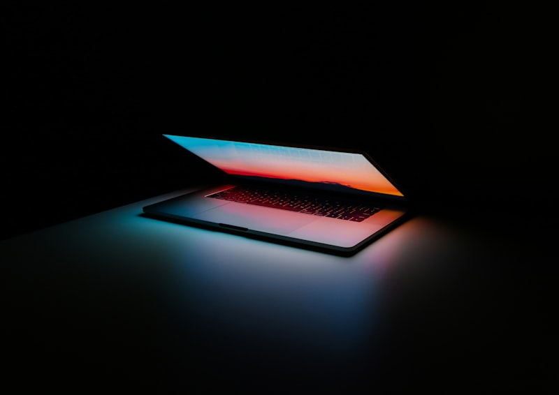

The 2017 cascade
How a single paper — not a chip, not an app, but a piece of mathematics — landed on the bottom floor of computing and forced every floor above it to be rebuilt.
🏢 The Bedrock Rule
The tower has one law: every floor stands on the floor beneath it. Apps need software, software needs an operating system, the OS needs a chip, and the chip is designed from mathematics.
Think of it like a stack of wooden blocks. If you nudge the very top block (a single app), nothing else moves. But if you pull out or change the foundation block at the bottom (the math of Floor 1), a domino effect shoots straight up and shakes every single block in the tower!
For most of computing's history, the big news happened on the middle and upper floors: faster processors, the personal computer, the internet, the smartphone. The foundation — the math of how we compute — barely moved. That is exactly why 2017 was a shock to the system.
What actually happened in 2017
A mathematical key that unlocked the hardware floor.
Eight researchers from Google Brain, Google Research, and the University of Toronto posted their paper to arXiv on 12 June 2017. They introduced a new design for neural networks called the TransformerThe neural-network architecture introduced in 2017. It processes a whole sequence in parallel using "attention," instead of reading it one step at a time. Every modern large language model — GPT, Claude, Gemini — is a Transformer., based entirely on self-attention.

🧮 Why it was a Floor 1 change, not a Floor 6 one
Before 2017, the best language models read sequences like one person reading a book page-by-page in order. Word 100 had to wait for word 99. This is a mathematical bottleneck: you cannot divide sequential work among multiple helpers.
The Transformer changed the math: it is like giving 1,000 pages to 1,000 friends to read at the exact same time. They all read in parallel, and then share what they learned. This is parallel linear algebra.
"Parallel" means the work can be cut into thousands of identical pieces and run simultaneously. There already existed a chip built to do exactly that — thousands of small math units working in lockstep: the GPU. In 2017, the new math on Floor 1 suddenly fit the hardware on Floor 2 like a key in a lock. That match is why the cascade was so violent and so fast.
The 2026 Scramble: Rebuilding the tower
Floor 6 (AI) is brilliant. Floors 1-5 are scrambling to catch up.
📉 The cost crisis under the headlines
By mid-2026, the tech industry hit a stark reality: the bottleneck is no longer raw model capability. Global AI infrastructure spending (chips, servers, networking) surged to $98 billion, outfacing finance teams' capacity to react.
Uber rolled out Anthropic's **Claude Code** to its 5,000 engineers. Adoption skyrocketed to 95% of teams monthly, contributing to 70% of committed code. The result? **Uber’s CTO, Praveen Neppalli Naga, blew through their entire 2026 AI budget by April.** Because consumption-based token costs scaled directly with usage, monthly bills per engineer reached hundreds of dollars. Uber was forced to establish a strict **$1,500 monthly cap** per engineer and deploy spend-monitoring dashboards.
As Deloitte's Enterprise AI Survey summarized: the primary blocker is now **organizational readiness**—governance, training, and the willingness to redesign workflows rather than simply "bolting AI on top" of legacy systems.
🧱 Explore the Rebuild, Floor-by-Floor
Select a floor to see how the cascade is actively reshaping its infrastructure in 2026.
The Governance & Budget Crisis
Surging agent usage (like Uber's budget blowout by April due to Claude Code) shifts the entire focus from simple chatbot demos to enterprise-grade governance, training, and cost-control pipelines.

The Governance & Budget Crisis
Surging agent usage (such as Uber's budget blowout by April due to Claude Code) shifts the entire focus from simple chatbot demos to enterprise-grade governance, training, and cost-control pipelines.
Reasoning Models & Inference Compute

AI has evolved from instant token generation to reasoning models that run reinforcement learning search loops at inference time. This 'thinking time' compute drives immense demand.
Sub-100ms Delta Lake Queries
Databricks now serves real-time AI queries straight from Delta Lake at sub-100ms latency. Powered by the new Reyden query engine, the database itself is optimized to think at the speed of generative AI models.
Spectrum-X Ethernet Fabrics

Nvidia's Spectrum-X lets GPUs across entire data centers act as one giant supercomputer over plain Ethernet. No exotic fabrics (like InfiniBand) required, making massive scaling cost-effective.
Agent-First OS Kernels

Microsoft rebuilt Windows as an 'agent-first' OS, introducing kernel-level execution containers (Microsoft Execution Containers - MXC) to isolate and govern AI agents — because autonomous agents increase attack surfaces by 450%.
RTX Spark Local Superchips

Nvidia's RTX Spark packs 1 petaflop of AI compute and 128GB of unified memory directly into a laptop. Compute is finally moving from the cloud to your desk, allowing local, secure agent execution.
Quantum-Enhanced ML Algorithms

IBM and Google are pushing quantum algorithms into machine learning workflows. The basic linear algebra and mathematical foundations beneath AI are starting to change to support complex reasoning.
You can see the cascade in the real world
If the bedrock really shifted, the heaviest objects in the industry should have moved. They did.
🟩 NVIDIA: a graphics company became the engine room of AI
NVIDIA made chips for video games. Those chips happened to be the parallel hardware the Transformer needed — so NVIDIA became one of the most valuable companies in the world. In October 2025 it began shipping the DGX Spark (and its larger sibling, the DGX Station): a personal AI supercomputer the size of a small box, built on the Grace Blackwell chip, for about $3,999. A machine that would have filled a data centre a decade ago now sits on a desk — because Floor 1 demanded it.
🍎 Apple: the next CEO is a hardware engineer
For decades the prized skill at the top of tech was operations or design. But when intelligence depends on silicon, the most valuable knowledge moves back down to Floor 2. In April 2026, Apple announced that Tim Cook will become Executive Chairman and that John Ternus — its head of Hardware Engineering — will become CEO. The world's most valuable company handing its top job to a hardware engineer is the cascade made visible: in the age of AI, whoever controls the chip controls the future.
NVIDIA selling desktop supercomputers and Apple promoting a hardware engineer are not two separate news stories. They are the same story — value flowing back down to the hardware floor because the math on Floor 1 changed what hardware is for.
⚖️ Why this is different from every past "tech hype"
Plenty of trends touched a single floor — a hot programming language (Floor 5), a flashy app category (Floor 7), a faster phone (Floor 2). They came and went because a one-floor change can't move the building.
2017 was a Floor 1 change. The only other shifts of that depth are the founding ideas of computing itself — Turing's 1936 model of computation, the transistor, the microprocessor. Those didn't fade; they became the permanent floor everything else was built on. A Floor 1 change isn't a wave you ride. It's new ground you stand on.
💡 The Consultant's Roadmap
In this new era, the real value does not lie in building another simple chatbot demo. Anyone can spin up an API wrapper.
The real value lies in understanding the **five floors of infrastructure, cost optimization, and governance** required to make that chatbot survive in an enterprise environment. As a consultant or architect, this is your map to the future.